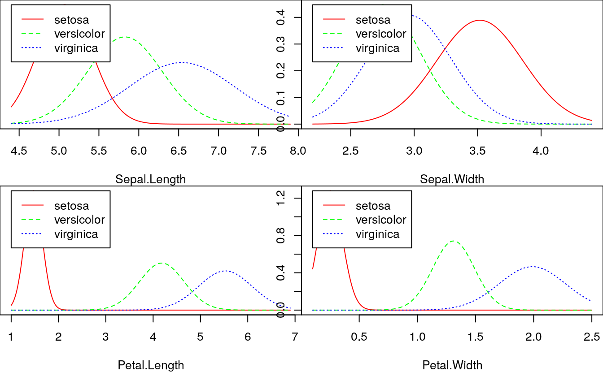
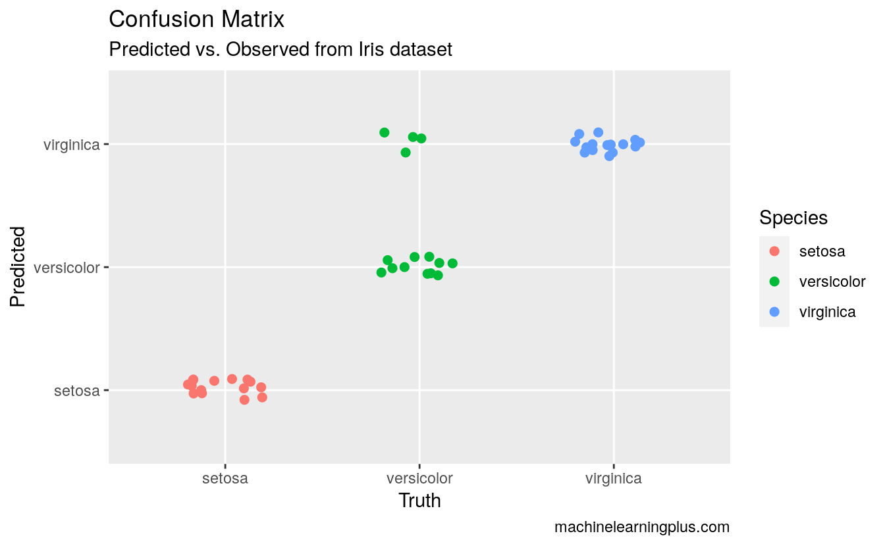

20 Building a Naive Bayes Classifier
- Datasets:
iris.csv - Algorithms:
- Naive Bayes
20.1 8. Building a Naive Bayes Classifier in R
Understanding Naive Bayes was the (slightly) tricky part. Implementing it is fairly straightforward.
In R, Naive Bayes classifier is implemented in packages such as e1071, klaR and bnlearn. In Python, it is implemented in scikit-learn.
For sake of demonstration, let’s use the standard iris dataset to predict the Species of flower using 4 different features: Sepal.Length, Sepal.Width, Petal.Length, Petal.Width
# Import Data
training <- read.csv('https://raw.githubusercontent.com/selva86/datasets/master/iris_train.csv')
test <- read.csv('https://raw.githubusercontent.com/selva86/datasets/master/iris_test.csv')The training data is now contained in training and test data in test dataframe. Lets load the klaR package and build the naive bayes model.
# Using klaR for Naive Bayes
library(klaR)
#> Loading required package: MASS
nb_mod <- NaiveBayes(Species ~ ., data=training)
pred <- predict(nb_mod, test)Lets see the confusion matrix.
# Confusion Matrix
tab <- table(pred$class, test$Species)
caret::confusionMatrix(tab)
#> Confusion Matrix and Statistics
#>
#>
#> setosa versicolor virginica
#> setosa 15 0 0
#> versicolor 0 11 0
#> virginica 0 4 15
#>
#> Overall Statistics
#>
#> Accuracy : 0.911
#> 95% CI : (0.788, 0.975)
#> No Information Rate : 0.333
#> P-Value [Acc > NIR] : 8.47e-16
#>
#> Kappa : 0.867
#>
#> Mcnemar's Test P-Value : NA
#>
#> Statistics by Class:
#>
#> Class: setosa Class: versicolor Class: virginica
#> Sensitivity 1.000 0.733 1.000
#> Specificity 1.000 1.000 0.867
#> Pos Pred Value 1.000 1.000 0.789
#> Neg Pred Value 1.000 0.882 1.000
#> Prevalence 0.333 0.333 0.333
#> Detection Rate 0.333 0.244 0.333
#> Detection Prevalence 0.333 0.244 0.422
#> Balanced Accuracy 1.000 0.867 0.933
# Plot density of each feature using nb_mod
opar = par(mfrow=c(2, 2), mar=c(4,0,0,0))
plot(nb_mod, main="")
par(opar)
# Plot the Confusion Matrix
library(ggplot2)
test$pred <- pred$class
ggplot(test, aes(Species, pred, color = Species)) +
geom_jitter(width = 0.2, height = 0.1, size=2) +
labs(title="Confusion Matrix",
subtitle="Predicted vs. Observed from Iris dataset",
y="Predicted",
x="Truth",
caption="machinelearningplus.com")